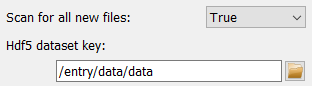
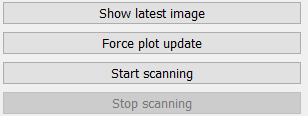

Directory spy frame#
The Directory spy frame is a graphical interface to configure and run the
DirectorySpyApp. It is split in two
main parts: On the left are the controls for configuring and running the
application. The right part of the frame is taken by a visualization widget for
the latest images read from the DirectorySpyApp.

The configuration on the left holds widgets to configure all necessary application Parameters as well as to start and stop running the actual application.
Configuring the input#
Data source#

The first Parameter the user must define is the working path for the app. Either copy the full directory path in the field or use the Open button to select a path in a pop-up window.

The default settings of the app is to scan for files corresponging to a specific file-naming pattern. An existing file can be selected using the Open button and its filename modified to exchange the counters in the filename with hashtags. An example of a filename with wildcards is given on the right. Note that the Hdf5 dataset key Parameter widget is also shown automatically if a hdf5 file extension was detected.
If the scan_for_all option has been selected, the filename pattern
Parameter will be hidded. Note that the Hdf5 dataset key Parameter is also
shown and this dataset is looked for in all new files in the specified folder.
Image corrections#

The Directory spy frame allows to mask the images with the global detector mask, toggled by changing the corresponding Parameter value.

In addition, a generic background image can be subtracted from all images. If this option is selected, the widget to select the filename is shown. If an hdf5 file was selected, the widgets for the selection of dataset and frame number are shown as well, see image on the right.
Running the App#
Running the DirectorySpyApp in this
frame will automatically display the latest update in the presentation widget
on the right.
A single directory scan can be performed by using the Show latest image button. This will also trigger a guaranteed update of the display widget.
A continuous process can be started by using the Start scanning button. This process will run until the pydidas UI is stopped or the Stop scanning button has been pressed. Updates to the display widget will be send based on the frequency set in the global settings.
Note
If a pattern has been selected, the app will perform a single scan of the whole directory upon starting to determine the latest image. To minimize file system access, it will then only look for the next consecutive file (and consequently, it will block if files are missing). To skip missing files, the user needs to restart the app.
Tip
The minimum frequency in which the plot is updated is defined in the global settings. Therefore, if two updates came back-to-back, pydidas will (depending on the settings) the second event and therefore will not show the latest image. A forced updated can be executed by using the Force plot update button.
Image data visualization#
Pydidas 2D plot#
The PydidasPlot2d is a
subclassed silx Plot2d
with additional features useful in pydidas.

- The menu
The menu bar allows access to all generic silx and additional pydidas functionality. The detailed menu icons and actions are described below in the menu entries description.
- The image display
This widget shows the image data. Depending on the zoom level, this is either the full image or a sub-region.
- The colorbar
The colorbar shows the reference for the used colormap to map data levels to colors.
- The position information
This widget displays the coordinates and data values of the data under the mouse cursor.
Two-dimensional plots are presented in a silx Plot2D widget. The toolbar options will be explained in detail below. Moving the mouse over the canvas will update the labels for x/y position and data value at the bottom of the canvas. Note that the x and y axis positions for each pixel are defined at the pixel center and the given values must be treated carefully with respect to the pixel shape, especially for coarse pixels.
Tip
The scaling of the results can be achieved by modifying the colormap settings.
menu entries description#
menu icon |
description |
|---|---|

|
Zoom mode: clicking with the mouse and dragging spans a new selection of the data to be visualized. |

|
Panning mode: clicking with the mouse and dragging moves the data on the canvas. |

|
Unzoom: Reset the display region to the full data. |

|
Match canvas: Set the aspect ratio to 1 and match the canvas size to the data to allow a tight fit. |

|
Expand canvas: Reset the canvas size to take up all available space. This option does also change the data aspect to make use of the full canvas. |

|
Open the colormap editor. This button opens a window with selections for the colormap and scaling of the displayed minimum and maximum values. |

|
Crop histogram outliers: Calculate the histogram of the image and set the colormap to ignore the low x% and the top *y% of the image histogram. The levels of x and y can be adjusted in the pydidas user settings. |

|
Autoscale the colormap to the image mean value +/- 3 standard deviations. |

|
This action allows to control the aspect of the displayed data and allows to stretch the data to fill the available canvas or keep its original aspect ratio. |

|
Control the position of the origin in the image: Select between the top left and bottom left corner. |

|
Display or hide the colorbar on the drawing canvas. |

|
Mask tools: This button opens an additional widget at the bottom of the canvas with tools for importing or setting a mask to mask certain data regions. |

|
Set coordinate system: This button will open a submenu which allows to
select the coordinate system (cartesian or cylindrical). Note that the
cylindrical coordinate system use the global |

|
Get information for selected datapoint: This button will allow the user to click on a point in the image and show a window with additional information about this point (specifically: all indices / data values). |

|
Copy the currently visible figure to the clipboard. This will only copy the main figure and not the colorbar. |

|
Save the currently loaded full data to file, ignoring any zooming. This function will open a dialogue to select the file type and filename. Depending on the selected file type, the colormap and scaling will be retained (e.g. for png export) or ignored (e.g. tiff export). |

|
Print the currently visible figure. This will print only the data visible on the canvas and it will retain colormap and scaling settings. |

|
Create and delete line profiles. This function allows the selection and editing of line profiles. The line profiles are shown in the histograms plots for the vertical and horizontal, respectively. |